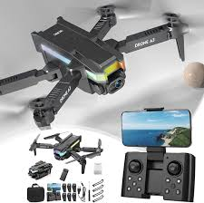
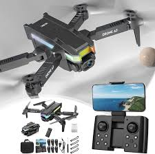

Requisiti e Regole
I droni A3 possono essere usati in aree lontane da persone e abitazioni.
Il peso dei droni può arrivare fino a 25kg.
È obbligatorio seguire un corso teorico online.
La registrazione del drone è necessaria presso ENAC.
È vietato il volo sopra zone urbane.
Il pilota deve conoscere il regolamento europeo e le zone di volo.
È richiesta una distanza minima di sicurezza dalle persone non coinvolte.
Il pilota deve superare un test teorico ufficiale.
La formazione prevede anche la gestione del rischio operativo.
Utilizzo possibile per attività lavorative e professionali.
 
